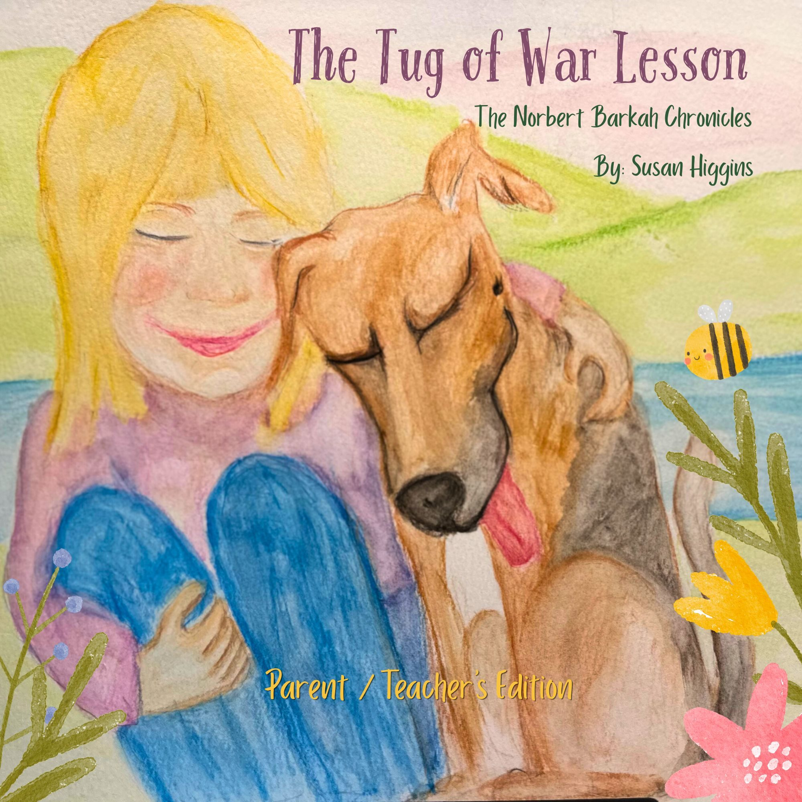

Stories worth reading out loud
The Tug of War Lesson is a gentle story about emotional wisdom, kindness, and the quiet strength it takes to choose peace over struggle. First shared as a storytime video with Norbert, this was the story that made viewers immediately ask where they could buy the book. It became the spark that turned storytime into a published children's book.
Written for children and meaningful to the grown-ups who read with them, the story offers a warm and reassuring path through big feelings. It invites readers to pause, notice what is pulling at them, and remember that not every struggle needs to be held.
Best for ages 4 to 8, and for older children or adults who love gentle read-alouds with heart.
Where to Buy
The same beloved story, now with activities, discussion prompts, and tools designed for parents, teachers, and caregivers. A companion edition that helps children explore the themes of kindness, emotional wisdom, and choosing peace in deeper, hands-on ways.
Join the email list to be the first to know when it arrives.
Get Notified"Don't pull the rope. If you don't pull, there's no fight."
Norbert knows both sides of this lesson. He is very committed to his rope toy. But he is also the reason the story exists -- because on the morning the idea arrived, he was right there beside the words, listening.
The Tug of War Lesson Parent/Teacher Edition is on its way. Leave your email and you will hear about it before anyone else.
These stories are made to be shared
Whether you are reading to a child at bedtime, sharing a story with a classroom, or sitting with a book yourself on a quiet afternoon, these stories are meant to be experienced together. Read them out loud. Talk about them. Let them sit with you a while.
Watch Storytime